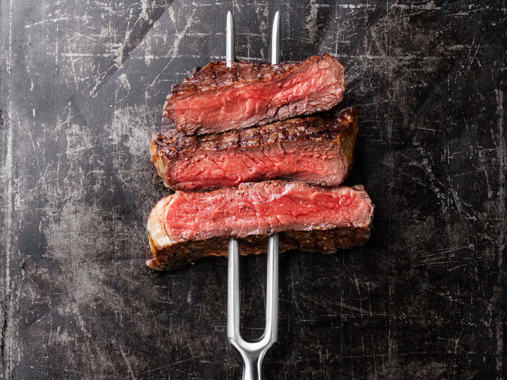
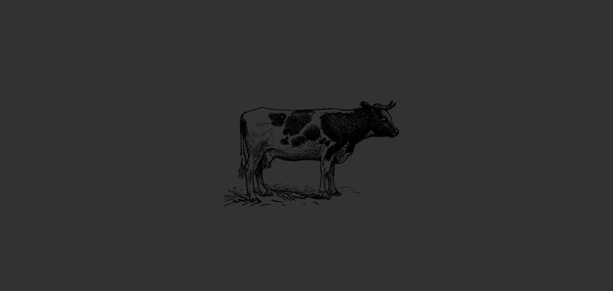
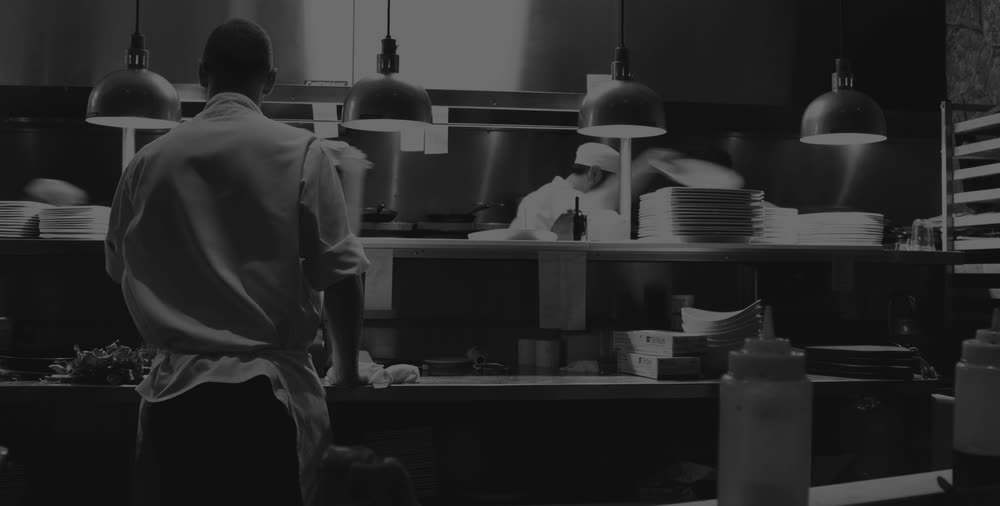
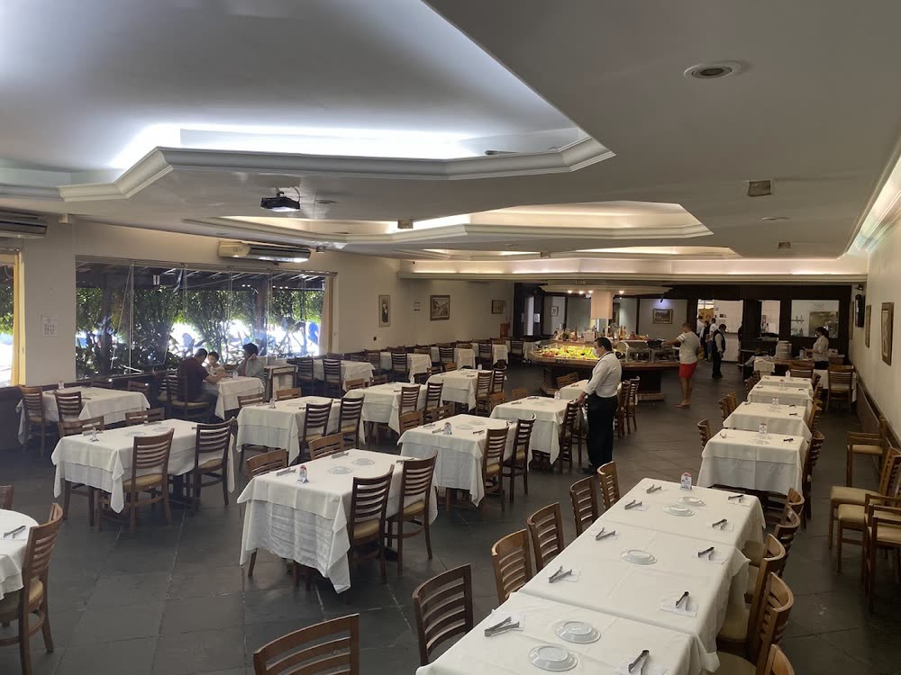
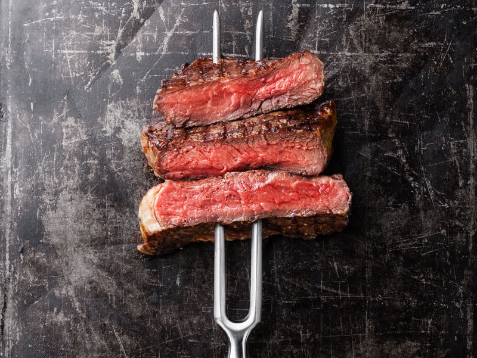
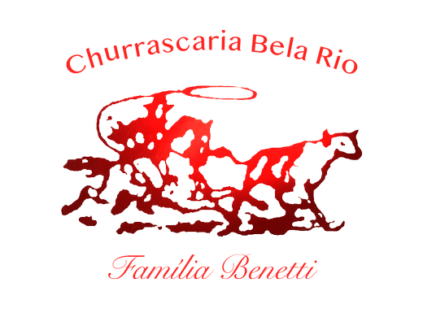

23 tipos de carne
Picanha, costela, cordeiro, frango, linguiça e queijo coalho assado, em cortes variados, passando na mesa sem parar.

O que vem na mesa
Picanha, costela, cordeiro, frango, linguiça e queijo coalho assado, em cortes variados, passando na mesa sem parar.
Mais 15 tipos de molhos e 6 pratos quentes. Batata frita, polenta, pastel e feijoada aparecem nas avaliações.
3 tipos de massa e os recheios à parte pra você montar o molho como gosta.
Pra quem quer ser rápido: pratos por quilo e carnes para viagem, todos os dias.
Valores do rodízio e de datas especiais: consulte por telefone ou no Instagram.

Tradição gaúcha
Salgar a carne, acender o fogo e cuidar do braseiro. É assim desde a primeira fornada, com o mesmo preparo, o mesmo churrasqueiro e o mesmo endereço na Marginal Tietê.

A casa


Horários e endereço
| Segunda a sábado | 11h às 23h |
| Domingo | 11h às 22h |
Quem já foi
★★★★★"Show. Muito bem servido. Picanha sensacional. Vale demais. Galera muito atenciosa. Pediu, chegou na mesa :-)"
★★★★★"Lugar TOP!!! Atendimento nota 10, não é aquelas churrascarias que precisa IMPLORAR pra trazer carne, MUITO BEM servido."
★★★★★"Estacionamento com manobrista (gratuito). Buffet bem servido com variedade de saladas, batatas fritas, polenta frita, pastel, feijoada... Destaque para picanha macia até não poder mais e o queijo coalho assado. Equipe muito atenciosa! Custo benefício excelente!"

Ligue pra garantir lugar no almoço ou no jantar. Em datas especiais, consulte os valores do dia.